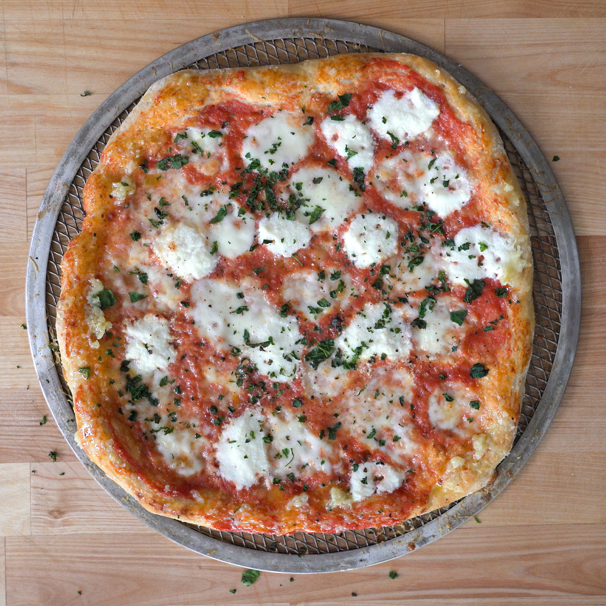

High Protein Pizza

A low calorie, high protein pizza you can indulge in.
Ingredients
High Protein Pizza Dough
- 150 g Bread Flour
- 50 g King Arthur Keto Flour Mix
- 4 g salt
- 4 g instant yeast
- 170 g warm water
Toppings (per pizza)
- 75 g Tomato Sauce
- 56 g Fresh mozzarella
- 50 g non-fat ricotta
- 14 g grated parmesan
- 10 cranks Black Pepper
- 5 g Melted butter
- 1 clove Garlic, grated
- Fresh Basil
Instructions
- Set a bowl over a scale and add 150 grams bread flour, 50 grams keto flour mix, 4 grams of salt, 4 grams of yeast, and 170 grams of warm water before mixing. Once mixed into a soggy mass, place a cover over the top and let rest for 20 minutes.
- After 20 minutes, knead the dough into a smooth dough ball and let rest covered for 2 to 3 hours. It should double in size during this time.
- Sprinkle some of the keto flour on the bench and separate the dough into two even size balls, which will make up our personal pizzas. Pull the dough tightly into balls. Toss a towel over the top and let bench rest for another 45 to 60 minutes. During this time, preheat your oven to 500 Fahrenheit.
- To stretch the pizza, flip the dough over and using your hands, work it into a reasonably thin pizza. Somewhere around 10 inches in diameter.
- Add the toppings of your choice - tomato sauce followed by the cheeses and black pepper.
- Slide the pizza into the oven for about 6 minutes. During this time, melt butter and grated garlic in a bowl.
- Pull the pizza out of the oven and sprinkle minced fresh basil. Slather the crust with the garlic butter sauce before tossing back in the oven for 1 to 2 more minutes until browned and crisp to your liking.